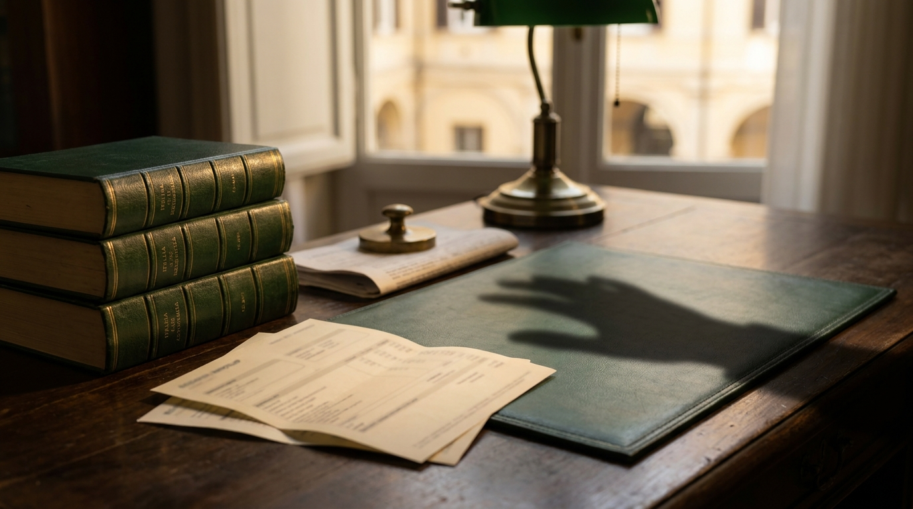

Minacce velate del capo: quando scatta l'estorsione
Le pressioni del datore di lavoro che, dietro la minaccia implicita del licenziamento, costringono il dipendente ad accettare condizioni peggiorative possono integrare il reato di estorsione. Un orientamento della Cassazione penale ne ha ribadito i contorni, distinguendo l'esercizio legittimo del potere direttivo dalla coercizione penalmente rilevante. Vediamo cosa cambia, e con quali limiti probatori.

Il fatto
Nella prassi dei rapporti di lavoro capita che la richiesta di accettare una retribuzione inferiore, mansioni dequalificanti, rinunce a diritti maturati o orari fuori contratto venga accompagnata da un avvertimento non esplicito: "chi non ci sta, sa cosa rischia". È la cosiddetta minaccia velata o ambientale.
Un orientamento della Cassazione penale ha chiarito che questo tipo di pressione, quando piega la volontà del lavoratore per ottenere un vantaggio economico ingiusto, può configurare il reato di estorsione e non una semplice scorrettezza contrattuale.
Inquadramento normativo
L'estorsione è disciplinata dall'art. 629 del codice penale. Punisce con la reclusione da cinque a dieci anni e la multa chi, mediante violenza o minaccia, costringe taluno a fare o a omettere qualcosa, procurando a sé o ad altri un ingiusto profitto con altrui danno.
La struttura del reato richiede quattro elementi: una minaccia (o violenza), una costrizione della vittima, un ingiusto profitto patrimoniale per l'agente e un danno per chi la subisce. La minaccia non deve essere necessariamente esplicita: la giurisprudenza riconosce da tempo la rilevanza della minaccia implicita o ambientale, desumibile dal contesto, dai rapporti di forza tra le parti e dalla posizione di debolezza del destinatario.
Nel rapporto di lavoro la posizione di soggezione del dipendente è strutturale. Per questo l'allusione velata al licenziamento, in un quadro di subordinazione economica, può assumere valore coercitivo anche senza parole esplicite.
Il confine con gli altri reati
Il vero nodo interpretativo è distinguere l'estorsione da figure vicine.
- Violenza privata (art. 610 c.p.): punisce chi costringe altri a fare, tollerare od omettere qualcosa mediante violenza o minaccia, ma *senza* ingiusto profitto patrimoniale. Quando il datore mira a un vantaggio economico (taglio del costo del lavoro, rinuncia a somme dovute), prevale invece la qualificazione estorsiva, proprio per la presenza del profitto.
- Esercizio arbitrario delle proprie ragioni (art. 393 c.p.): ricorre quando l'agente potrebbe far valere una pretesa effettivamente tutelabile davanti al giudice, ma si fa giustizia da sé. Qui invece il datore non vanta alcun diritto: pretende qualcosa che non gli spetta, e lo fa con la minaccia. Manca dunque il presupposto della pretesa giuridicamente fondata.
- Tentata estorsione: se la pressione viene esercitata ma il lavoratore non cede, il reato può configurarsi nella forma tentata.
È proprio l'ingiusto profitto patrimoniale a spostare la condotta verso l'art. 629 e a segnare la linea di confine rispetto al legittimo potere direttivo del datore, che resta lecito finché si muove nei limiti del contratto e della legge.
Implicazioni pratiche
Per il lavoratore questo significa che alcune condotte abituali — "o accetti il part-time o ti mando a casa", "firma la rinuncia agli straordinari o vediamo" — non sono solo illeciti civili, ma possono avere rilievo penale.
Sul piano risarcitorio, oltre al danno patrimoniale (differenze retributive, somme perse), il lavoratore può chiedere il ristoro del danno non patrimoniale, legato alla lesione della dignità e della salute. Va però precisato: il danno non patrimoniale non è automatico. Deve essere specificamente allegato e provato, anche con documentazione medica o testimoniale. Nessun esito è garantito.
Resta inoltre la difficoltà probatoria tipica delle minacce velate: per definizione non lasciano tracce esplicite. La prova si costruisce sul contesto, sulla sequenza dei fatti e sulla convergenza di più elementi indiziari.
Cosa fare in concreto
- Documenta tutto. Conserva e-mail, messaggi, comunicazioni aziendali, note di servizio e qualunque elemento che ricostruisca la sequenza delle pressioni.
- Annota tempi e circostanze. Registra per iscritto date, luoghi e contenuti dei colloqui, indicando eventuali persone presenti che possano testimoniare.
- Non firmare sotto pressione. Una rinuncia o un accordo peggiorativo sottoscritti in stato di costrizione possono essere contestati; firmare "per quieto vivere" indebolisce la posizione.
- Valuta entrambe le strade. È opportuno esaminare con un legale sia il profilo penale (querela per estorsione) sia quello civile e lavoristico (impugnazione, risarcimento), che possono procedere in parallelo.
- Agisci nei termini. Verifica i termini per la querela e per le impugnazioni in materia di lavoro, che possono essere stringenti.
Disclaimer
Contributo informativo a cura di Tamburro & Partners - Avv. Giuseppe Tamburro. Non costituisce parere legale.
Ogni storia di lavoro ha i suoi tempi.
Se gestisci HR e vuoi un confronto su contenzioso, ispezioni o licenziamenti, scrivi allo studio. Ti rispondiamo entro un giorno lavorativo.